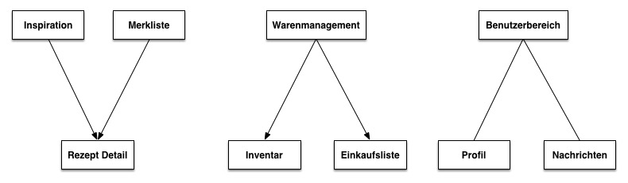

Kontext
Wie bereits aus dem übergeordneten Kapitel „Konzept“ hervorging fokussieren wir primär drei Anwendungsfälle: Inspiration suchen, Lebensmittel inserieren und einen Überblick über die eigenen Lebensmittel erhalten.
Zu unseren Anwendungsfällen kommen sehr variable Nutzungskontexte. Diese werden zudem durch situative Bedingungen wie den Ort, Zeit und Lichtverhältnisse beeinflusst. Unterstützt durch unser bestrebtes Ziel, den Sharingvorgang von Lebensmitteln zu unterstützten und so einfach wie möglich zu gestalten, impliziert dies weitere Anforderung an die Gestaltung und die Anforderungen des Nutzers. Diese werden wir in den nachfolgenden Kapiteln aufgreifen und näher behandeln.
Navigationsstruktur
Damit wir selbst Nutzer mit geringer technischer Versiertheit bei der Nutzung des Systems unterstützten können, ist eine eingängige gut strukturierte Navigation nötig.

Auf die eine detaillierte Darstellung aller möglichen Operationen auf allen Seiten wurde im Zuge der Übersichtlichkeit verzichtet. Zentraler Kernaspekt in der Applikation stellt die Inspirationsansicht dar. Diese generiert aus den Inventaren Verwertungsvorschläge. Die sich an den Inspirationsfeed anschließende Detailansicht der Rezepte dient der Übersicht und dem weiteren Ablauf. Von der Detailansicht aus kann man ein Rezept zeitgleich vormerken und dessen Lebensmittel auf die Einkaufsliste setzen lassen. Vorgemerkte Rezepte findet man im zweiten Abschnitt „Merkliste“ wieder. Diese beherbergt eine Liste der favorisierten und zum Kochen vorgemerkten Rezepte. Von dieser Ansicht gelangt man in eine Detailansicht, die sich mit der des Inspirationsfeeds deckt.
Ein essentieller Teil des Systems liegt in der Verwaltung der Lebensmittel. Diese befindet sich unter dem Punkt Warenmanagement. Nur mit einem gefüllten virtuellen Kühlschrank ist ein Sharing, eine Verwertung von Resten oder ein Kochen ohne in den Supermarkt gehen zu müssen möglich. In der zweiten Hierarchie unterteilt sich dieser Punkt in die Inventarliste, die sämtliche Lebensmittel beinhaltet, die der Nutzer bereits in seinem Besitz hat, und die Einkaufsliste, die die Lebensmittel beinhaltet, die bei Mitgliedern abgeholt oder im Supermarkt eingekauft werden müssen.
Der vierte Strukturpunkt dient für Einstellungen, Bearbeitungsfunktionen und eine Übersicht für Notifications bzw. Nachrichten. Das eigene Profil kann eingesehen und abgeändert werden. Änderungen wie zum Beispiel die Synchronisation der Lebensmittel aus dem Supermarkt oder Interaktionen zwischen Nutzern werden an dieser Stelle aufgezeigt.
UI Komponenten
Es war uns wichtig den User nicht zu verwirren und ihm das Gefühl zu geben diese App bereits schon zu kennen. Wir haben ein Interface gestaltet ohne viel Schnörkel und tiefe Hierarchien. Das ermöglicht dem User schnell zwischen verschiedenen Situationen und Screens zu wechseln ohne den Überblick zu verlieren.
Die schnelle Lernkurve bei der Benutzung der App zeichnet sich durch gewohnte Komponenten wie einer Tab-Bar, Listen-Icons und vielem Mehr aus. Die Tab-Bar besteht hierbei aus drei Unterpunkten (Inspiration, Merkliste, Warenmanagement). Außerdem haben wir ein „Pull to Refresh“ Funktion eingebaut um neue Inspirationen zu laden. Dies kennen wir auch schon aus den gängigen Apps von Facebook und Twitter.
Die Listenelemente sind im Standard-Look gehalten. Pfeile werden als Indikator für weitere Informationen verwendet. Das Draggen von rechts nach links eröffnet uns die Möglichkeiten des Teilens, Löschens oder weitere Funktionen auszuführen. Ein Infinite Scrolling zu implementieren wäre eventuell hilfreich, sieht unser aktuelles Konzept aber noch nicht vor.